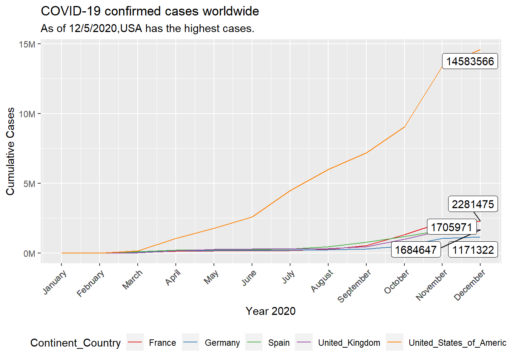
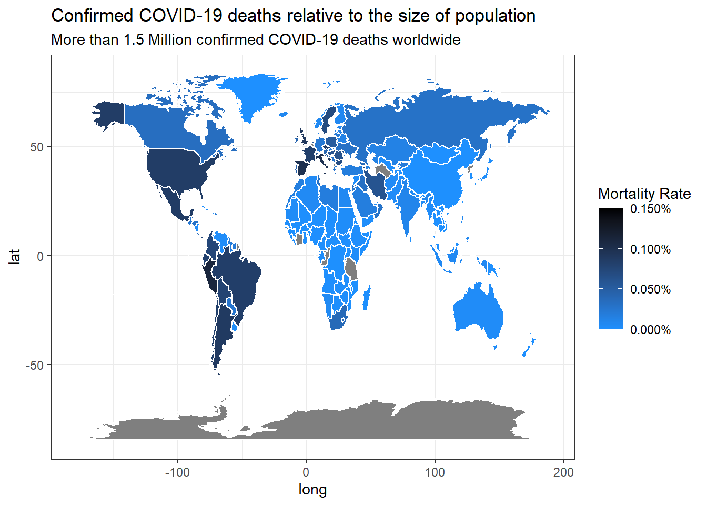

{r setup, include=FALSE} knitr::opts_chunk$set(message=FALSE,warning=FALSE, cache=TRUE)
Challenge 1
This API to find out when the ISS (International Space Station) will be passing over Hamburg (which is at latitude 53.5511, longitude: 9.9937): This API returns times to us in the form of Unix time.
library(glue)##
## Attaching package: 'glue'## The following object is masked from 'package:dplyr':
##
## collapselibrary(httr)
library(jsonlite)
resp <- GET("http://api.open-notify.org/iss-pass.json", query = list(lat =53.5511, lon = 9.9937))
resp## Response [http://api.open-notify.org/iss-pass.json?lat=53.5511&lon=9.9937]
## Date: 2020-12-06 18:54
## Status: 200
## Content-Type: application/json
## Size: 522 B
## {
## "message": "success",
## "request": {
## "altitude": 100,
## "datetime": 1607280489,
## "latitude": 53.5511,
## "longitude": 9.9937,
## "passes": 5
## },
## "response": [
## ...data = fromJSON(rawToChar(resp$content))
data## $message
## [1] "success"
##
## $request
## $request$altitude
## [1] 100
##
## $request$datetime
## [1] 1607280489
##
## $request$latitude
## [1] 53.5511
##
## $request$longitude
## [1] 9.9937
##
## $request$passes
## [1] 5
##
##
## $response
## duration risetime
## 1 303 1607280934
## 2 391 1607335587
## 3 608 1607341228
## 4 649 1607346990
## 5 650 1607352787Challenge 2
library(tidyverse) # Main Package - Loads dplyr, purrr, etc.## -- Attaching packages --------------------------------------- tidyverse 1.3.0 --## v tibble 3.0.4 v purrr 0.3.4
## v tidyr 1.1.2 v stringr 1.4.0
## v readr 1.4.0 v forcats 0.5.0## -- Conflicts ------------------------------------------ tidyverse_conflicts() --
## x glue::collapse() masks dplyr::collapse()
## x dplyr::filter() masks stats::filter()
## x purrr::flatten() masks jsonlite::flatten()
## x dplyr::lag() masks stats::lag()library(rvest) # HTML Hacking & Web Scraping## Loading required package: xml2##
## Attaching package: 'rvest'## The following object is masked from 'package:purrr':
##
## pluck## The following object is masked from 'package:readr':
##
## guess_encodinglibrary(xopen) # Quickly opening URLs
library(jsonlite) # converts JSON files to R objects
library(glue) # concatenate strings
library(stringi) # character string/text processing
url_home <- "https://www.radon-bikes.de/"
xopen(url_home)## Running cmd /c start "\"\"" /b "https://www.radon-bikes.de/"html_home <- read_html(url_home)
bike_family_tbl <- html_home %>%
html_nodes(css = ".megamenu__item > a") %>%
html_attr('href') %>%
discard(.p = ~stringr::str_detect(.x,"wear")) %>%
enframe(name = "position", value = "cat_subcat_url") %>%
mutate(family_id = str_glue("https://www.radon-bikes.de{cat_subcat_url}bikegrid"))
bike_family_tbl## # A tibble: 8 x 3
## position cat_subcat_url family_id
## <int> <chr> <glue>
## 1 1 /mountainbike/hardtail/ https://www.radon-bikes.de/mountainbike/har~
## 2 2 /mountainbike/fullsuspe~ https://www.radon-bikes.de/mountainbike/ful~
## 3 3 /trekking-cross/trekkin~ https://www.radon-bikes.de/trekking-cross/t~
## 4 4 /trekking-cross/cross/ https://www.radon-bikes.de/trekking-cross/c~
## 5 5 /e-bike/mountainbike/ https://www.radon-bikes.de/e-bike/mountainb~
## 6 6 /e-bike/trekking/ https://www.radon-bikes.de/e-bike/trekking/~
## 7 7 /roadbike/carbon/ https://www.radon-bikes.de/roadbike/carbon/~
## 8 8 /roadbike/alu/ https://www.radon-bikes.de/roadbike/alu/bik~bike_category_url <- bike_family_tbl$family_id[1]
xopen(bike_category_url)## Running cmd /c start "\"\"" /b \
## "https://www.radon-bikes.de/mountainbike/hardtail/bikegrid"html_bike_category <- read_html(bike_category_url)
bike_name_tbl <- html_bike_category %>%
html_nodes(css = ".m-bikegrid__info .a-heading--small") %>%
html_text() %>%
enframe(name = "position", value = "name")
bike_name_tbl ## # A tibble: 33 x 2
## position name
## <int> <chr>
## 1 1 "\n JEALOUS 8.0\n ~
## 2 2 "\n JEALOUS 9.0\n ~
## 3 3 "\n JEALOUS 10.0\n ~
## 4 4 "\n JEALOUS 10.0 EA\n ~
## 5 5 "\n JEALOUS 10.0\n ~
## 6 6 "\n JEALOUS 10.0 EA\n ~
## 7 7 "\n NEW JEALOUS SUPERLITE 1X\n ~
## 8 8 "\n JEALOUS AL 8.0\n ~
## 9 9 "\n JEALOUS AL 8.0 HD\n ~
## 10 10 "\n JEALOUS AL 9.0\n ~
## # ... with 23 more rowsbike_price_tbl <- html_bike_category %>%
html_nodes(css = ".m-bikegrid__price.currency_eur .m-bikegrid__price--active") %>%
html_text() %>%
enframe(name = "position", value = "price")
bike_price_tbl## # A tibble: 33 x 2
## position price
## <int> <chr>
## 1 1 2599 €
## 2 2 2999 €
## 3 3 3999 €
## 4 4 5299 €
## 5 5 3699 €
## 6 6 3799€
## 7 7 999 €
## 8 8 999 €
## 9 9 1299 €
## 10 10 1499 €
## # ... with 23 more rowsmodel_price_tbl <- left_join(bike_name_tbl, bike_price_tbl)%>%
select(name, price)## Joining, by = "position"model_price_tbl## # A tibble: 33 x 2
## name price
## <chr> <chr>
## 1 "\n JEALOUS 8.0\n ~ 2599~
## 2 "\n JEALOUS 9.0\n ~ 2999~
## 3 "\n JEALOUS 10.0\n ~ 3999~
## 4 "\n JEALOUS 10.0 EA\n ~ 5299~
## 5 "\n JEALOUS 10.0\n ~ 3699~
## 6 "\n JEALOUS 10.0 EA\n ~ 3799€
## 7 "\n NEW JEALOUS SUPERLITE 1X\n ~ 999 €
## 8 "\n JEALOUS AL 8.0\n ~ 999 €
## 9 "\n JEALOUS AL 8.0 HD\n ~ 1299~
## 10 "\n JEALOUS AL 9.0\n ~ 1499~
## # ... with 23 more rowsChallenge 1
library(tidyverse)
library(data.table)##
## Attaching package: 'data.table'## The following object is masked from 'package:purrr':
##
## transpose## The following objects are masked from 'package:dplyr':
##
## between, first, lastlibrary(ggplot2)
library(ggrepel)
library(mapproj)## Loading required package: maps##
## Attaching package: 'maps'## The following object is masked from 'package:purrr':
##
## mapurl <- "https://opendata.ecdc.europa.eu/covid19/casedistribution/csv"
covid_data_tbl <- fread(url)
class(covid_data_tbl)## [1] "data.table" "data.frame"colnames(covid_data_tbl)## [1] "dateRep"
## [2] "day"
## [3] "month"
## [4] "year"
## [5] "cases"
## [6] "deaths"
## [7] "countriesAndTerritories"
## [8] "geoId"
## [9] "countryterritoryCode"
## [10] "popData2019"
## [11] "continentExp"
## [12] "Cumulative_number_for_14_days_of_COVID-19_cases_per_100000"str(covid_data_tbl)## Classes 'data.table' and 'data.frame': 60196 obs. of 12 variables:
## $ dateRep : chr "06/12/2020" "05/12/2020" "04/12/2020" "03/12/2020" ...
## $ day : int 6 5 4 3 2 1 30 29 28 27 ...
## $ month : int 12 12 12 12 12 12 11 11 11 11 ...
## $ year : int 2020 2020 2020 2020 2020 2020 2020 2020 2020 2020 ...
## $ cases : int 234 235 119 202 400 272 0 228 214 0 ...
## $ deaths : int 10 18 5 19 48 11 0 11 15 0 ...
## $ countriesAndTerritories : chr "Afghanistan" "Afghanistan" "Afghanistan" "Afghanistan" ...
## $ geoId : chr "AF" "AF" "AF" "AF" ...
## $ countryterritoryCode : chr "AFG" "AFG" "AFG" "AFG" ...
## $ popData2019 : int 38041757 38041757 38041757 38041757 38041757 38041757 38041757 38041757 38041757 38041757 ...
## $ continentExp : chr "Asia" "Asia" "Asia" "Asia" ...
## $ Cumulative_number_for_14_days_of_COVID-19_cases_per_100000: num 7.33 7.12 7.11 7.54 7.01 ...
## - attr(*, ".internal.selfref")=<externalptr>#check the unique country present.
unique(covid_data_tbl$countriesAndTerritories)## [1] "Afghanistan"
## [2] "Albania"
## [3] "Algeria"
## [4] "Andorra"
## [5] "Angola"
## [6] "Anguilla"
## [7] "Antigua_and_Barbuda"
## [8] "Argentina"
## [9] "Armenia"
## [10] "Aruba"
## [11] "Australia"
## [12] "Austria"
## [13] "Azerbaijan"
## [14] "Bahamas"
## [15] "Bahrain"
## [16] "Bangladesh"
## [17] "Barbados"
## [18] "Belarus"
## [19] "Belgium"
## [20] "Belize"
## [21] "Benin"
## [22] "Bermuda"
## [23] "Bhutan"
## [24] "Bolivia"
## [25] "Bonaire, Saint Eustatius and Saba"
## [26] "Bosnia_and_Herzegovina"
## [27] "Botswana"
## [28] "Brazil"
## [29] "British_Virgin_Islands"
## [30] "Brunei_Darussalam"
## [31] "Bulgaria"
## [32] "Burkina_Faso"
## [33] "Burundi"
## [34] "Cambodia"
## [35] "Cameroon"
## [36] "Canada"
## [37] "Cape_Verde"
## [38] "Cases_on_an_international_conveyance_Japan"
## [39] "Cayman_Islands"
## [40] "Central_African_Republic"
## [41] "Chad"
## [42] "Chile"
## [43] "China"
## [44] "Colombia"
## [45] "Comoros"
## [46] "Congo"
## [47] "Costa_Rica"
## [48] "Cote_dIvoire"
## [49] "Croatia"
## [50] "Cuba"
## [51] "Curaçao"
## [52] "Cyprus"
## [53] "Czechia"
## [54] "Democratic_Republic_of_the_Congo"
## [55] "Denmark"
## [56] "Djibouti"
## [57] "Dominica"
## [58] "Dominican_Republic"
## [59] "Ecuador"
## [60] "Egypt"
## [61] "El_Salvador"
## [62] "Equatorial_Guinea"
## [63] "Eritrea"
## [64] "Estonia"
## [65] "Eswatini"
## [66] "Ethiopia"
## [67] "Falkland_Islands_(Malvinas)"
## [68] "Faroe_Islands"
## [69] "Fiji"
## [70] "Finland"
## [71] "France"
## [72] "French_Polynesia"
## [73] "Gabon"
## [74] "Gambia"
## [75] "Georgia"
## [76] "Germany"
## [77] "Ghana"
## [78] "Gibraltar"
## [79] "Greece"
## [80] "Greenland"
## [81] "Grenada"
## [82] "Guam"
## [83] "Guatemala"
## [84] "Guernsey"
## [85] "Guinea"
## [86] "Guinea_Bissau"
## [87] "Guyana"
## [88] "Haiti"
## [89] "Holy_See"
## [90] "Honduras"
## [91] "Hungary"
## [92] "Iceland"
## [93] "India"
## [94] "Indonesia"
## [95] "Iran"
## [96] "Iraq"
## [97] "Ireland"
## [98] "Isle_of_Man"
## [99] "Israel"
## [100] "Italy"
## [101] "Jamaica"
## [102] "Japan"
## [103] "Jersey"
## [104] "Jordan"
## [105] "Kazakhstan"
## [106] "Kenya"
## [107] "Kosovo"
## [108] "Kuwait"
## [109] "Kyrgyzstan"
## [110] "Laos"
## [111] "Latvia"
## [112] "Lebanon"
## [113] "Lesotho"
## [114] "Liberia"
## [115] "Libya"
## [116] "Liechtenstein"
## [117] "Lithuania"
## [118] "Luxembourg"
## [119] "Madagascar"
## [120] "Malawi"
## [121] "Malaysia"
## [122] "Maldives"
## [123] "Mali"
## [124] "Malta"
## [125] "Marshall_Islands"
## [126] "Mauritania"
## [127] "Mauritius"
## [128] "Mexico"
## [129] "Moldova"
## [130] "Monaco"
## [131] "Mongolia"
## [132] "Montenegro"
## [133] "Montserrat"
## [134] "Morocco"
## [135] "Mozambique"
## [136] "Myanmar"
## [137] "Namibia"
## [138] "Nepal"
## [139] "Netherlands"
## [140] "New_Caledonia"
## [141] "New_Zealand"
## [142] "Nicaragua"
## [143] "Niger"
## [144] "Nigeria"
## [145] "North_Macedonia"
## [146] "Northern_Mariana_Islands"
## [147] "Norway"
## [148] "Oman"
## [149] "Pakistan"
## [150] "Palestine"
## [151] "Panama"
## [152] "Papua_New_Guinea"
## [153] "Paraguay"
## [154] "Peru"
## [155] "Philippines"
## [156] "Poland"
## [157] "Portugal"
## [158] "Puerto_Rico"
## [159] "Qatar"
## [160] "Romania"
## [161] "Russia"
## [162] "Rwanda"
## [163] "Saint_Kitts_and_Nevis"
## [164] "Saint_Lucia"
## [165] "Saint_Vincent_and_the_Grenadines"
## [166] "San_Marino"
## [167] "Sao_Tome_and_Principe"
## [168] "Saudi_Arabia"
## [169] "Senegal"
## [170] "Serbia"
## [171] "Seychelles"
## [172] "Sierra_Leone"
## [173] "Singapore"
## [174] "Sint_Maarten"
## [175] "Slovakia"
## [176] "Slovenia"
## [177] "Solomon_Islands"
## [178] "Somalia"
## [179] "South_Africa"
## [180] "South_Korea"
## [181] "South_Sudan"
## [182] "Spain"
## [183] "Sri_Lanka"
## [184] "Sudan"
## [185] "Suriname"
## [186] "Sweden"
## [187] "Switzerland"
## [188] "Syria"
## [189] "Taiwan"
## [190] "Tajikistan"
## [191] "Thailand"
## [192] "Timor_Leste"
## [193] "Togo"
## [194] "Trinidad_and_Tobago"
## [195] "Tunisia"
## [196] "Turkey"
## [197] "Turks_and_Caicos_islands"
## [198] "Uganda"
## [199] "Ukraine"
## [200] "United_Arab_Emirates"
## [201] "United_Kingdom"
## [202] "United_Republic_of_Tanzania"
## [203] "United_States_of_America"
## [204] "United_States_Virgin_Islands"
## [205] "Uruguay"
## [206] "Uzbekistan"
## [207] "Vanuatu"
## [208] "Venezuela"
## [209] "Vietnam"
## [210] "Wallis_and_Futuna"
## [211] "Western_Sahara"
## [212] "Yemen"
## [213] "Zambia"
## [214] "Zimbabwe"#getting month name column
covid_data_tbl$month_name<-months(as.Date(covid_data_tbl$dateRep))
##rolling up data to month year country Level
covid_mon_yr_country_lvl <- covid_data_tbl %>%
dplyr::group_by(month,month_name,year,countriesAndTerritories,geoId,countryterritoryCode,continentExp) %>%
dplyr::summarise(cases = sum(cases, na.rm = T)) %>%
dplyr::ungroup()## `summarise()` regrouping output by 'month', 'month_name', 'year', 'countriesAndTerritories', 'geoId', 'countryterritoryCode' (override with `.groups` argument)##creating Cummulative Cases column
covid_mon_yr_country_lvl <- covid_mon_yr_country_lvl %>%
dplyr::arrange(countriesAndTerritories,year,month) %>%
dplyr::group_by(countriesAndTerritories) %>%
dplyr::mutate(cumulative_cases = cumsum(cases)) %>%
dplyr::ungroup()
##I am filtering only for those shown in the graph and for the year = 2020
covid_mon_yr_country_lvl_fil<- covid_mon_yr_country_lvl %>%
dplyr::filter(countriesAndTerritories %in% c("Germany","Spain","France","United_Kingdom","United_States_of_America")& year == 2020) %>%
dplyr::rename('Continent_Country' = countriesAndTerritories)
#Graph using ggploat
covid_mon_yr_country_lvl_fil %>%
mutate(label = if_else(month_name == "December",as.character(cumulative_cases),NA_character_)) %>%
ggplot(aes(x=month,y =cumulative_cases))+
geom_line(aes(color = Continent_Country))+
scale_colour_brewer(palette = "Set1")+
scale_x_continuous(breaks=covid_mon_yr_country_lvl_fil$month,labels = covid_mon_yr_country_lvl_fil$month_name)+
scale_y_continuous(labels = scales::dollar_format(scale = 1/1e6,
prefix = "",
suffix = "M"))+
labs(title = "COVID-19 confirmed cases worldwide",
subtitle = "As of 12/5/2020,USA has the highest cases.",
x = "Year 2020",
y= "Cumulative Cases"
)+
theme(legend.position = "bottom",
axis.text.x = element_text(angle=45,hjust = 1))+
geom_label_repel(aes(label=label),
nudge_x = 1,na.rm = TRUE)
Challenge 2
cat("\014")library(ggplot2)
library(dplyr)
library(tidyverse)
library(ggthemes)
library(lubridate)##
## Attaching package: 'lubridate'## The following objects are masked from 'package:data.table':
##
## hour, isoweek, mday, minute, month, quarter, second, wday, week,
## yday, year## The following objects are masked from 'package:base':
##
## date, intersect, setdiff, unionlibrary(ggrepel)
library(maps)
library(readr)
library(scales)##
## Attaching package: 'scales'## The following object is masked from 'package:purrr':
##
## discard## The following object is masked from 'package:readr':
##
## col_factor## DATA PREPARATION
covid_data_tbl <- read_csv("https://opendata.ecdc.europa.eu/covid19/casedistribution/csv")##
## -- Column specification --------------------------------------------------------
## cols(
## dateRep = col_character(),
## day = col_double(),
## month = col_double(),
## year = col_double(),
## cases = col_double(),
## deaths = col_double(),
## countriesAndTerritories = col_character(),
## geoId = col_character(),
## countryterritoryCode = col_character(),
## popData2019 = col_double(),
## continentExp = col_character(),
## `Cumulative_number_for_14_days_of_COVID-19_cases_per_100000` = col_double()
## )covid_mortality_rate <- covid_data_tbl %>%
select(countriesAndTerritories, deaths, popData2019) %>%
set_names(c("country", "deaths", "population")) %>%
# Selecting columns to focus on and adding a month column
mutate(mortality_rate = deaths/population)%>%
mutate(across(country, str_replace_all, "_", " ")) %>%
mutate(country = case_when(
country == "United Kingdom" ~ "UK",
country == "United States of America" ~ "USA",
country == "Czechia" ~ "Czech Republic",
TRUE ~ country
)) %>%
group_by(country) %>%
summarize(deaths=sum(deaths),population=max(population),mortality_rate = sum(mortality_rate)) %>%
ungroup() ## `summarise()` ungrouping output (override with `.groups` argument)world <- map_data("world")
covid_world_mortality_rate <- left_join(x = world, y = covid_mortality_rate, by=c("region" = "country"))
ggplot(covid_world_mortality_rate, aes(x=long, y=lat, group = group, fill = (mortality_rate))) +
geom_polygon(colour = "white") +
scale_fill_continuous(low = "dodgerblue",
high = "black",
guide="colorbar",
labels=percent,
limits = c(0, .0015)) +
theme_bw() +
labs(fill = "Mortality Rate" ,
title = "Confirmed COVID-19 deaths relative to the size of population",
subtitle = "More than 1.5 Million confirmed COVID-19 deaths worldwide",
x="long",
y="lat") 
# scale_y_continuous(breaks=c()) +
# scale_x_continuous(breaks=c()) +
# theme()